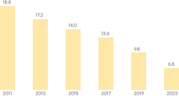

슬라이드 영역
overview
이제는 책과 문제집이 아닌 디지털 기기로
독서와 문제를 풀고 있습니다.
고민중이에요..
정리를 같이 할 수는 없을까?
overview
이제는 책과 문제집이 아닌 디지털 기기로
독서와 문제를 풀고 있습니다.
20대 연평균 독서량
1년간 책을 한 권 이상 읽은 성인 비율
Research
문제와 해설, 풀이방법이 나와있는 웹사이트 혹은 애플리케이션에 대한 인식 설문조사를 진행했습니다.
기존 시장의 서비스를 기반으로 목표 달성의
기본적인 니즈, 동기 부여들을 파악하는 설문조사를 진행했습니다.
main target
어휘력과 독해력을 향상 시키고 싶은 사람들.
혹은 국어 영역 중에 문학 및 비문학을 공부하고 싶은 학생들.
Q. 문학 독서(비문학) 문제, 해설과 풀이방법을 사용할 수 있는
웹사이트 혹은 애플리케이션을 알고있다면 사용하시겠습니까?
사용할 것 같음
71.2%
"하루 한 지문, 어떻게 만들어 졌을까요?"
목표 설정에 맞는 UI/UX 전략을 도출하기 위해 설문조사를 통해 독서에 관한 인식과 평소 학생들이 느끼는 불편함 등을 알게되었습니다. 이후 리서치를 진행해 전반적인 니즈 파악과 필요한 기능들을 구상하였고, 그에 맞춰 인사이트를 제작과 동시에 개발하게 되었습니다.
SeonWah_Affinity Diagram
Desk & User Research/Survey
Design Solution & Cooperation